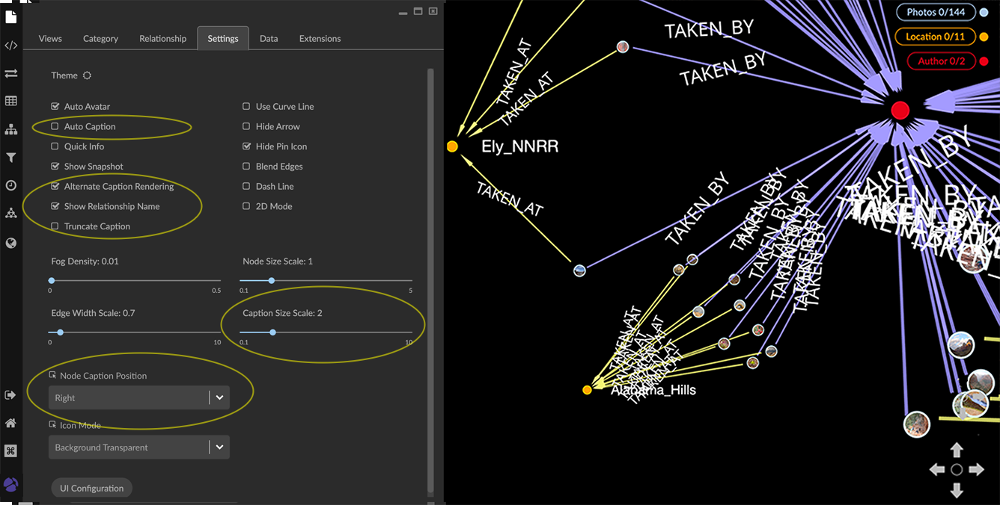

Setting Colors, Icons, and Captions Using color, icons, and adding captions makes it much easier to highlight patterns, select data for further analysis and transformation, and create compelling visualizations. Categories, relationships, property values, and tags are assigned colors automatically. At any time, you can: Change the color assigned to a category, and the color assigned to a relationship, tag, or property value. Change the icon applied to a category using a searchable icon library available via a category’s Style Setting dialog. In the Settings panel, the Icon Mode menu enables you to select one of three global coloring modes. Label nodes and edges with captions derived from a category’s property values. Scale the size of the nodes of a category or edges of a relationship by a property value. Selecting a color You can set a color and icon for a category, relationship, or property value using the list in the Legend. Clicking the colored dot next to any list item displays the Styling Setting dialog, a combined color and icon picker with separate Color and Icon tabs. A color and icon can be applied to tags, but only if you click Save As a Property in the Manager Tags dialog. This creates a special graphxrtags property. In the Property legend list, you can set the color and icon of graphxrtags property values, and these then also appear in the Tag list. You can also select a new color and icon for a category or a relationship color in the Project panel’s Category or Relationship tab. Select a category (or relationship) and click its colored circle (or rectangle) to display the color and icon pickers. To select a color: Go to the Legend and click the Category, Relationship, or Property tab. Tags are colored using the temporary _graphxrtags property created in the Manager Tags dialog and Save Tags as Property button. Locate the item in the legend list, or for a Property, select a property name from the dropdown menu and then locate the list item for one of its values. Click the colored dot or line at the right of the item to display a color picker. In the Styling Setting dialog, click one of the pre-set colored dots, use the color palette to select the color of your choice, or enter the hex value for the color. The new color is applied immediately. Click the X at the upper right to close the dialog. Selecting a color scaled by a property value You can assign a color scale or gradient for the property values of a category or tag using the list in the Legend. To set a color scale for a property: Go to the Legend and click the Property tab. Select a property name from the dropdown menu. The menu includes the properties of all visible categories, in alphabetic order. Click the Use Scale Color checkbox, and choose a color scale from the additional dropdown menu. In the example above, the BuPu scale colors visible Character nodes according to their kills property value, on a gradient with a lowest value assigned a pale blue, and the highest a dark purple. All nodes of the category or tag are colored, whether selected or not. Hidden nodes are colored as soon as they are restored to the graph space. Selecting an icon A category, property, or tag can include an icon as well as a color. You select an icon using the Legend and Styling Setting dialog, in the same way you select a color. You can search for an icon by name, or use the dropdown menu to select general types of icons. Icons are colored with your current color choice and icon mode. To change the coloring mode for icons, go to the Project -> Settings and Icon Mode menu at the bottom of the panel. To select an icon for a Category: Go to the Legend and click the Category tab. Locate the Category in the list and click the colored dot at the right. This displays the Styling Setting dialog. Click the Icon tab to display the icon picker. To locate icons, you can Search by name (e.g. “_home_”). Use the dropdown menu to display groups of similar icons. Click to select an icon for the category. The new icon is applied to all the nodes of the category, colored with your current color choice and mode, and the dialog closes. Applying captions to nodes or edges In the Styling Setting dialog for a category or relationship you can select one or more properties of a category or relationship whose values will be used as captions on those nodes or edges. The caption for each property you select is displayed on a separate line. Captions appear when the node or edge is close enough to your virtual viewpoint, and disappear when you navigate further away. You can also go to the Projects panel and Category or Relationship tab and use Caption checkboxes in the lists of properties of a category or relationship to select captions. Often a property will have just one value, but multi-line property values are also supported, and are displayed in captions. A property with more than one value will appear with each value on a separate line. The Projects panel and Settings tab provides options to set the global display of captions:  Auto Caption checkbox automatically applies a default caption property (caption>label>title>name) if the user hasn’t selected one for that category. Alternate Caption Rendering checkbox displays captions using an alternate rendering that may be more legible than the default rendering at very small text sizes. However, the number of captions which can be rendered at a time is limited. Show Relationship Name checkbox displays the relationship name on every edge. Caption Size Scale slider lets you adjust the global text size of captions. Node Caption Position dropdown menu lets you adjust the position of captions on nodes. Position options are Right, Top (left-aligned or centered), Bottom (left-aligned or centered), and Vertical. To apply captions: In the legend, click the colored dot or line next to a category or relationship to show the Styling Setting dialog. Click the Caption tab. From the dropdown menu, select the properties to be applied as captions on the nodes (or edges). If you select more than one property, the caption displays in the order you add the properties to the list in the Styling Setting dialog, or select properties using the Caption checkboxes in the Project panel. For example, a caption with the Episode's property values selected in order of season, episode, and title appears as follows: